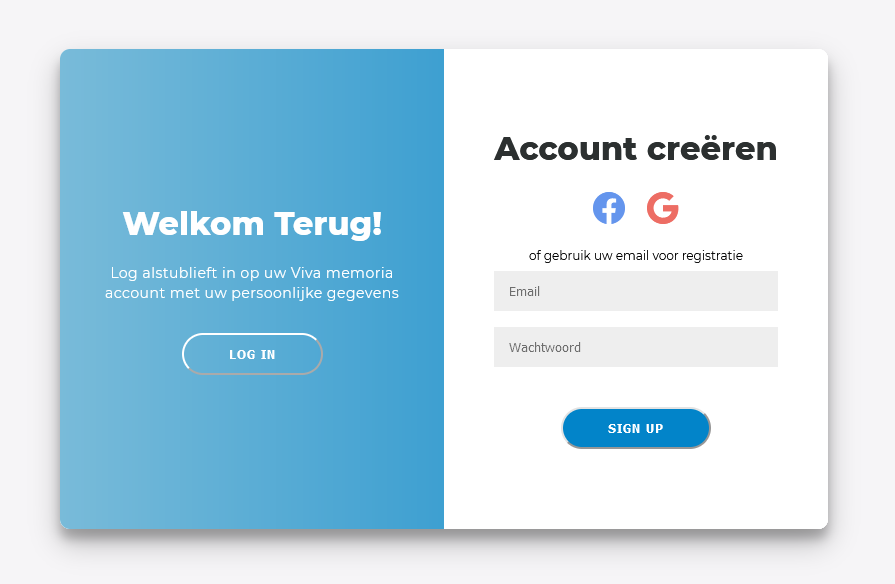

Reflectieverslag, week 11
29/11/2021 - 03/12/2021Deze week werk ik weer op finale versies en laatste aanpassingen van gemaakte design pagina's. Ik heb aantal veranderingen gemaakt in mijn vorige design pattern en ook aantal nieuwe design voor laatste pagina's voorgesteld.
Deze week heb ik gebruikt gemaakt van wat ik tijdens deze stage tot nu toe heb geleerd en verder niets nieuws geleerd.
Ik heb ook de implementatie van authenticatie pagina gedaan. Maar Auth0 heeft voor zich een template dat niet met mijn design functioneerd daarom heb ik geprobeerd om de authenticatie zelf te bouwen. Tijdens testen kreeg ik altijd een error dat ik geen geldige gebruiker ben. Om het te kunnen op te lossen heb ik aantal tutorials gevolgd en volgens een tutorial moest ik aantal veranderingen in google developer console te maken maar van mijn mentor mocht ik geen aanpassinden in de console maken en kreeg een voorstel dat het proberen op een aparte versie die geen relatie met Viva memoria heeft. Zo is het niet meer riskant. Het probleem is dat ik geen ervaring met Auth0 voor authenticatie heb en moet het even onderzoeken en pas daarna mijn probleem proberen op te lossen. Volgende week moet ik al mijn codes verwijderen en opnieuw beginnen.
Volgende taken heb ik gedaan:
- herdenkingsruimten weer aangepast
- beheer pagina's weer aangepast
- mijn herdenkingsruimtes weer aangepast
- finale versie paginabeheerder/begrafenisondernemer overview pagina
- aanpassen van mijn bijdrages aan herdenkingsruimtes
- nieuwe design voorstellen voor 404 pagina
- nieuwe design voorstellen voor FAQ pagina
- nieuwe design voorstellen voor PRIVACYBELEID pagina
- aanpassingen op basis van feedbacks aan alle pagina's
- 404 pagina V2.0
- FAQ pagina V2.0
- mijn herdenkingsruimtes pagina V2.0
- nieuwe design voorstellen voor algemene voorwaarden pagina
- alle button-icons filled (type) gemaakt
- update van wireflow
- componenten of github source codes gevonden en op miro geplaast voor het gebruik tijdens development
- documentatie verder opgebouwd
- test functionaliteit op jira (bij comment en screenshot)
- verandering van kleuren bij authentication van Auth0 template
- beginnen met implementatie van authenticatie pagina
Maandag:
-
herdenkingsruimten weer aangepast
-
beheer pagina's weer aangepast

-
mijn herdenkingsruimtes weer aangepast
-
finale versie paginabeheerder/begrafenisondernemer overview pagina
-
aanpassen van mijn bijdrages aan herdenkingsruimtes
Dinsdag:
-
nieuwe design voorstellen voor 404 pagina
-
nieuwe design voorstellen voor FAQ pagina
-
nieuwe design voorstellen voor PRIVACYBELEID pagina
Woensdag:
-
aanpassingen op basis van feedbacks aan alle pagina's; Onder andere:

Beheer pagina's mijn bijdrages aan herdenkingsruimtes -
404 pagina V2.0
Volgens mijn mentor Kristina 404-pagina met een vector is niet serieus.
-
FAQ pagina V2.0
-
mijn herdenkingsruimtes pagina V2.0
-
nieuwe design voorstellen voor algemene voorwaarden pagina
-
alle button-icons filled (type) gemaakt; Onder andere:
-
update van wireflow
Donderdag:
-
componenten of github source codes gevonden en op miro geplaast voor het gebruik tijdens development; Onder andere:
-
documentatie verder opgebouwd
-
test functionaliteit op jira (bij comment en screenshot)
-
verandering van kleuren bij authentication van Auth0 template
Bij Auth0 default template mogen we achtergrond kleur en button kleur veranderen

Vrijdag:
-
beginnen met implementatie van authenticatie pagina design
